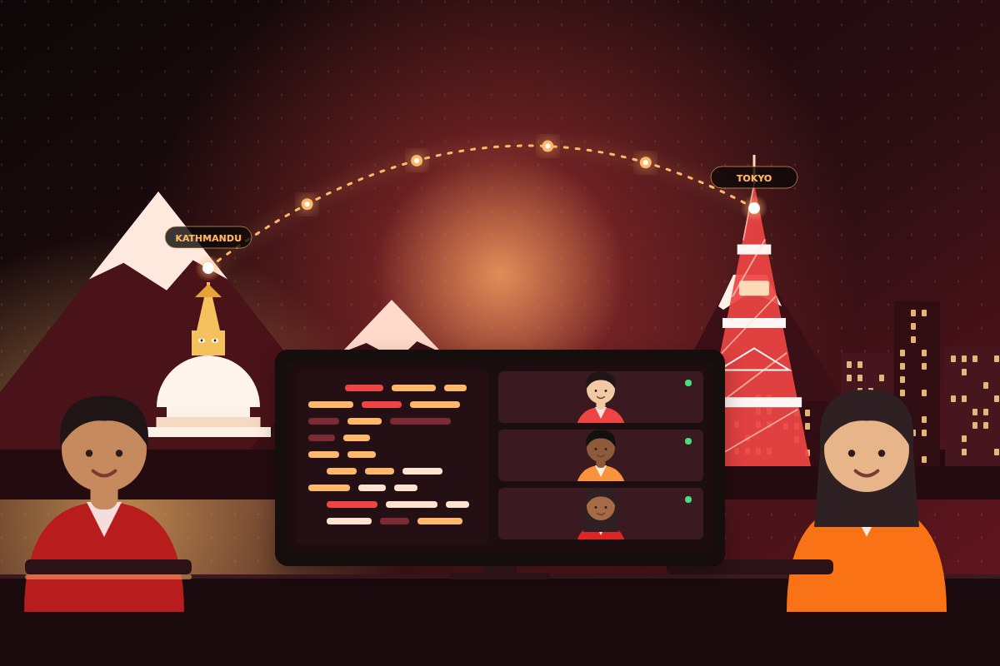

How to Evaluate AI Tools Objectively: Six Tests for Any Rating
Learn to weigh the five kinds of evidence behind an AI tool rating, apply six checkable tests before you trust a score, and run a pilot scorecard your own team can defend.

Claude Code × Senior Engineer: The Operating Model Behind Modern Offshore Delivery
How AI-augmented, senior-led offshore development actually works in production — the three-step loop, the boundaries we refuse to cross, and the economics of fast delivery.

Nepal Offshore Development Center (ODC): The Complete Guide for Japanese and Global Enterprises
A decision-grade guide to building a Nepal Offshore Development Center — when an ODC outperforms project-based outsourcing, how to structure governance, and realistic cost models.
Offshore Development Between Japan and Nepal: Lessons Learned
Five years of running cross-border engineering teams — what works, what does not, and the cultural bridges that make collaboration thrive.

Building Scalable Microservices with Go and Kubernetes
A practical guide on designing fault-tolerant microservices, from service discovery to graceful degradation under load in distributed cloud systems.

Offshore HR for Tech: Sourcing Bilingual Engineers for Japanese and Global Teams
A practical guide to offshore HR and staffing for technology employers — how to evaluate bilingual engineering talent and build cross-border team retention.
Have a software project in mind?
Whether you need an AI tool pilot, a dedicated offshore squad in Kathmandu, or senior architecture advisory in Tokyo, our engineers are ready to help.